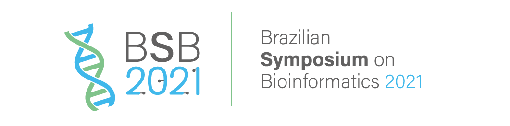

2021 - July, 4: The 2021 Brazilian Symposium on Bioinformatics (BSB) will take place on November 22-26. Due to the ongoing COVID-19 pandemic, this year BSB will take place in an online format. Follow BSB 2021 updates in the official conference website.
